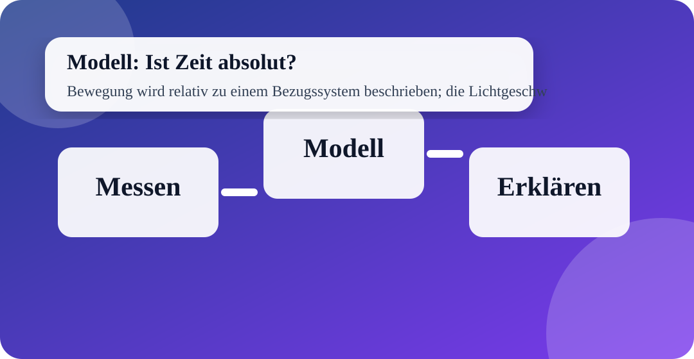

Worum es geht
Du analysierst Bewegungen aus verschiedenen Bezugssystemen und verstehst die Lichtuhr als qualitatives Argument für Zeitdilatation.
Fachliche Schwerpunkte:
- Bewegungen abhängig vom Bezugssystem beschreiben
- Lichtuhr als Gedankenexperiment verstehen
- Zeitdilatation qualitativ erklären

Leitfrage verstehen und Niveaus wählen
Du analysierst Bewegungen aus verschiedenen Bezugssystemen und verstehst die Lichtuhr als qualitatives Argument für Zeitdilatation.
- Bewegungen abhängig vom Bezugssystem beschreiben
- Lichtuhr als Gedankenexperiment verstehen
- Zeitdilatation qualitativ erklären
Rechenwege werden in Teilziele zerlegt. Einheiten werden immer mitgeführt.
Erkläre, warum GPS ohne relativistische Korrekturen ungenauer wäre. Es reicht eine qualitative Erklärung mit Zeitmessung und Satelliten.
Vertiefung über Fehlvorstellungen, Modellgrenzen und eigene Erklärungen mit Fachsprache.
Lichtuhr mit ruhendem und bewegtem Lichtweg; Fokus auf Perspektivwechsel
Bearbeite zuerst die vorherige Station.
Vermuten · Beobachten · Erklären
Simulationsauftrag: Vergleiche ruhende und bewegte Lichtuhr. Erkläre, warum die Lichtgeschwindigkeit nicht einfach größer werden darf.
Gestufte Tippkarten mit 30-Sekunden-Denkstopp
Öffne immer nur so viele Tipps, wie du wirklich brauchst.
- Lies zuerst die Leitfrage und markiere die gesuchte Größe.
- Notiere gegebene Größen mit Einheit.
- Wähle die Formel passend zur Situation und stelle sie ggf. um.
- Prüfe am Ende: Einheit, Richtung/Diagramm und Antwortsatz.
Bearbeite zuerst die vorherige Station.
Rechenweg: einfacher Gamma-Faktor
γ = 1/√(1−v²/c²), Δt = γ·Δt₀
Ein Raumschiff fliegt mit v = 0,60 c. Berechne γ näherungsweise und die gemessene Zeit, wenn in der Borduhr Δt₀ = 10 s vergeht.
- v²/c² = 0,60² = 0,36
- 1−0,36 = 0,64
- γ = 1/√0,64 = 1/0,8 = 1,25
- Δt = 1,25 · 10 s = 12,5 s
Rechenwerte prüfen
Gestufte Tippkarten mit 30-Sekunden-Denkstopp
Öffne immer nur so viele Tipps, wie du wirklich brauchst.
- Lies zuerst die Leitfrage und markiere die gesuchte Größe.
- Notiere gegebene Größen mit Einheit.
- Wähle die Formel passend zur Situation und stelle sie ggf. um.
- Prüfe am Ende: Einheit, Richtung/Diagramm und Antwortsatz.
Bearbeite zuerst die vorherige Station.
Lichtuhr deuten
Gestufte Tippkarten mit 30-Sekunden-Denkstopp
Öffne immer nur so viele Tipps, wie du wirklich brauchst.
- Lies zuerst die Leitfrage und markiere die gesuchte Größe.
- Notiere gegebene Größen mit Einheit.
- Wähle die Formel passend zur Situation und stelle sie ggf. um.
- Prüfe am Ende: Einheit, Richtung/Diagramm und Antwortsatz.
Bearbeite zuerst die vorherige Station.
Alltagsbeispiel fachlich übertragen
Erkläre, warum GPS ohne relativistische Korrekturen ungenauer wäre. Es reicht eine qualitative Erklärung mit Zeitmessung und Satelliten.
Bearbeite zuerst die vorherige Station.
Fehlvorstellung: optische Täuschung
Finde den Fehler in dieser Erklärung und entscheide, welche Aussage fachlich tragfähig ist.
Gestufte Tippkarten mit 30-Sekunden-Denkstopp
Öffne immer nur so viele Tipps, wie du wirklich brauchst.
- Lies zuerst die Leitfrage und markiere die gesuchte Größe.
- Notiere gegebene Größen mit Einheit.
- Wähle die Formel passend zur Situation und stelle sie ggf. um.
- Prüfe am Ende: Einheit, Richtung/Diagramm und Antwortsatz.
Bearbeite zuerst die vorherige Station.
Erklärung prüfen, nicht Lösung abschreiben
Nutze den Fobizz-Lernbegleiter gezielt als Diagnose- und Formulierungshilfe.
- Prüfe, ob ich die beiden Bezugssysteme sauber getrennt habe.
- Stelle mir eine Verständnisfrage zur Lichtuhr, aber verrate nicht direkt die Lösung.
Bearbeite zuerst die vorherige Station.
Merksatz, Rechenweg, Transfer
Merksatz
Prüffrage
Welche Aussage zeigt, dass du die Leitfrage verstanden hast?
Bearbeite zuerst die vorherige Station.
Externe Simulationen, Versuche und Quellen
- LEIFI: Zeitdilatation
- Gedankenexperiment/Demo: Ball im Zug und Lichtuhr: Ball senkrecht werfen im fahrenden Wagen als Bezugssystemeinstieg; Lichtuhr anschließend als animierte Skizze analysieren.